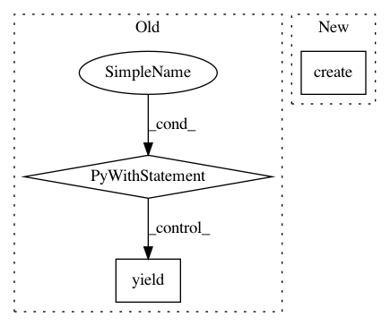

40c214aa1c044a02b5290aa3ec7cc9570dbe24ad,tests/python/pants_test/engine/legacy/test_graph.py,GraphInvalidationTest,open_scheduler,#GraphInvalidationTest#Any#Any#,75
Before Change
@contextmanager
def open_scheduler(self, specs, symbol_table_cls=None):
kwargs = self._make_setup_args(specs, symbol_table_cls=symbol_table_cls)
with open_legacy_graph(**kwargs) as triple:
yield triple
@contextmanager
def open_pg(self, specs):
with self.open_scheduler(specs) as (_, _, scheduler):
yield scheduler.product_graph
After Change
@contextmanager
def open_scheduler(self, specs, symbol_table_cls=None):
path_ignore_patterns = [".*"]
target_roots = TargetRoots.create(options=self._make_setup_args(specs))
graph_helper = EngineInitializer.setup_legacy_graph(path_ignore_patterns,
symbol_table_cls=symbol_table_cls,
native=self._native)
try:
In pattern: SUPERPATTERN
Frequency: 3
Non-data size: 3
Instances
Project Name: pantsbuild/pants
Commit Name: 40c214aa1c044a02b5290aa3ec7cc9570dbe24ad
Time: 2016-11-06
Author: stuhood@gmail.com
File Name: tests/python/pants_test/engine/legacy/test_graph.py
Class Name: GraphInvalidationTest
Method Name: open_scheduler
Project Name: pantsbuild/pants
Commit Name: 3b77f6b6c38fea6616cae10ca8e0c3a20782934a
Time: 2016-09-12
Author: benjyw@gmail.com
File Name: tests/python/pants_test/pantsd/subsystem/test_subprocess.py
Class Name: SubprocessTest
Method Name: subprocess
Project Name: pantsbuild/pants
Commit Name: 3b77f6b6c38fea6616cae10ca8e0c3a20782934a
Time: 2016-09-12
Author: benjyw@gmail.com
File Name: tests/python/pants_test/pantsd/subsystem/test_watchman_launcher.py
Class Name: TestWatchmanLauncher
Method Name: watchman_launcher